|
|
|
11.3. ConstraintsAs with indexes, constraints can be added to tables. As explained previously, constraints are added to give tables more integrity. In this section, we discuss some of the constraints available in SQL Server : the NOT NULL constraint, the PRIMARY KEY constraint, the UNIQUE constraint, the CHECK constraint, and a few referential constraints. 11.3.1. The NOT NULL ConstraintThe NOT NULL constraint is an integrity CONSTRAINT that allows the database creator to deny the creation of a row where a column would have a null value. Usually, a null signifies a missing data item. As discussed in previous chapters, nulls in databases present an interpretation problemdo they mean not applicable, not available, unknown, or what? If a situation in which a null is present could affect the integrity of the database, then the table creator can deny anyone the ability to insert nulls into the table for that column. To deny nulls, we can create a table with the NOT NULL constraint on a column(s) after the data type. The following example shows how to include the NOT NULL constraint using a CREATE TABLE statement: CREATE TABLE Test2 (name VARCHAR(20), ssn CHAR(9), dept_number INT NOT NULL, acct_balance SMALLMONEY) In this newly created table, Test2, the dept_number column, now has a NOT NULL constraint included (and the Allow Nulls option is unchecked, as shown in Figure 11-4).
Figure 11-4. Table definition of Test2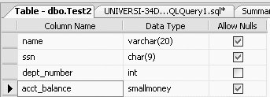The NOT NULL constraint can also be added to the column after the table has been created. You can check the Allow Nulls option of the dept_number column in Figure 11-4, or you can use SQL to do this. To do this in SQL, you will have to use the ALTER TABLE command, as we illustrate in the following example. Suppose that we created the Test2 table as follows: CREATE TABLE Test2 (name VARCHAR(20), ssn CHAR(9), dept_number INT, acct_balance SMALLMONEY) Now, we want to add a NOT NULL constraint (using SQL) after the table has been created. To do so, we must use the ALTER COLUMN option within the ALTER TABLE statement, with the following general syntax: ALTER TABLE Tablename ALTER COLUMN column_name column_type(size) NOT NULL So, to set the dept_number column in the Test2 table to NOT NULL, we would type the following: ALTER table Test2 ALTER COLUMN dept_number INTEGER NOT NULL This query will give us the same table definition that we got in Figure 11-4. But you need to understand the following three things about the ALTER COLUMN extension of the ALTER TABLE statement:
You will get following error message: Msg 156, Level 15, State 1, Line 2 Incorrect syntax near the keyword 'NOT'.
11.3.2. The PRIMARY KEY ConstraintWhen creating a table, a PRIMARY KEY constraint will prevent duplicate values for the column(s) defined as a primary key. Internally, the designation of a primary key also creates a primary key index. Designation of a primary key will be necessary for the referential integrity constraints that follow. The designation of a primary key also automatically puts the NOT NULL constraint in the definition of the column(s), as you will see in an example later in the chapter. A fundamental rule of relational database is that primary keys cannot be null. One of the following three options can be used to set the primary key. 11.3.2.1. Option 1The first option is to declare the primary key while creating the table, in the CREATE TABLE statement. Here, the PRIMARY KEY constraint is added to the column upon creation: CREATE TABLE Test2a (ssn CHAR(9) CONSTRAINT ssn_pk PRIMARY KEY, name VARCHAR2(20), etc. ssn_pk is the name of the PRIMARY KEY constraint for the ssn column. It is conventional to name all CONSTRAINTs (although most people often do not bother to name NOT NULL constraints). The following two options of setting the primary key are preferable because they provide greater flexibility. 11.3.2.2. Option 2The second option available to create a primary key is called the table format, in which the CREATE TABLE looks like the following:
CREATE TABLE Test2a
(ssn CHAR(9),
blah blah ..,
acct_balance NUMBER,
CONSTRAINT ssn_pk PRIMARY KEY (ssn))
11.3.2.3. Option 3The third option available to create a primary key is to add the stipulation of the PRIMARY KEY post hoc by using the ALTER TABLE command. The syntax for the PRIMARY KEY in the ALTER TABLE command would be as follows: ALTER TABLE Tablename ADD CONSTRAINT constraint_name PRIMARY KEY (column_name(s)) So, to make ssn a primary key column in Test2, we could type the following: ALTER TABLE Test2 ADD CONSTRAINT ssn_pk PRIMARY KEY (ssn) But, once you type in that syntax, you will receive the following error message: Msg 8111, Level 16, State 1, Line 1 Cannot define PRIMARY KEY constraint on nullable column in table 'Test2'. Msg 1750, Level 16, State 0, Line 1 Could not create constraint. See previous errors. This error occurs because SQL Server does not allow you to define a primary key on a column that has not been specified as NOT NULL. So, we need to first make ssn a column that will not accept nulls as follows: ALTER TABLE Test2 ALTER COLUMN ssn CHAR(9) NOT NULL The design of the Test2 table will now be as in shown in Figure 11-5.
Figure 11-5. New table definition of Test2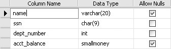Now we can type the following command to create the primary key: ALTER TABLE Test2 ADD CONSTRAINT ssn_pk PRIMARY KEY (ssn) Figure 11-6 shows the primary key constraint that we just created (note the key icon on the left of the ssn column).
Figure 11-6. Primary key constraint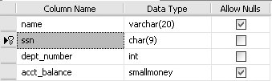You can view this ssn_pk constraint by clicking the + sign beside Test2, and then clicking the + sign beside the Keys node. You will get the results shown in Figure 11-7.
Figure 11-7. The ssn_pk constraint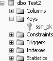You can modify, rename, delete, or refresh this ssn_pk constraint by right-clicking ssn_pk, as shown in Figure 11-8. 11.3.2.4. Concatenated primary keysIn relational databases, it is sometimes necessary to define more than one column as the primary key. When more than one column makes up a primary key, it is called a concatenated primary key. In SQL Server , however, you cannot directly designate a concatenated primary key with a statement like the following:
Figure 11-8. Changing constraint properties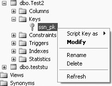CREATE TABLE Test2a (ssn CHAR(9) PRIMARY KEY, salary INT PRIMARY KEY) This query will give the following error message: Msg 8110, Level 16, State 0, Line 1 Cannot add multiple PRIMARY KEY constraints to table 'Test2a'. In SQL Server , you can define the concatenated primary key in the following way: CREATE TABLE Test2a (ssn CHAR(9), salary INT, CONSTRAINT ssn_salary_pk PRIMARY KEY (ssn, salary)) The table definition of the Test2a table will now be as shown in Figure 11-9.
Figure 11-9. Table definition of Test2a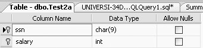Or, you can create the concatenated primary key in two separate statements, first with a CREATE TABLE: CREATE TABLE Test2b (ssn CHAR(9) NOT NULL, salary INT NOT NULL) Then, with an ALTER TABLE: ALTER TABLE Test2b ADD CONSTRAINT ssn_salary_pk1 PRIMARY KEY (ssn, salary) This query will produce the same table definition as was shown in Figure 11-9. We called this latter constraint ssn_salary_pk1, because you cannot have another constraint called ssn_salary_pk (which was a constraint created for table Test2a). Figure 11-10 shows the constraints created for table Test2b. Note that the constraint shows up not only as a key constraint, but also as an index.
Figure 11-10. Viewing the constraints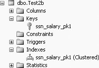Another example of a concatenated primary key. Suppose that we have a new table in our database, Grade1, which has columns student_number, section_id, and grade. Further suppose that a grade cannot be determined by either the student_number or section_id alone. Because both these columns (together) are required to uniquely identify a grade, the student_number and section_id will have to be the concatenated primary key of the Grade1 table. The CREATE TABLE and ALTER TABLE sequence for creating the Grade1 table with the concatenated primary key as is shown next. First we create the Grade1 table: CREATE TABLE Grade1 (student_number CHAR(9) NOT NULL, section_id CHAR(9) NOT NULL, grade CHAR(1)) Then we define the concatenated primary key:
ALTER TABLE Grade1 ADD CONSTRAINT snum_section_pk
PRIMARY KEY (student_number, section_id)
Figure 11-11 gives the table definition of table Grade1.
Figure 11-11. Table definition of Grade1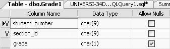Figure 11-12 shows the constraint snum_section_pk.
Figure 11-12. The snum_section_pk constraint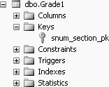11.3.3. The UNIQUE ConstraintLike PRIMARY KEY, UNIQUE is another column integrity constraint. UNIQUE is different from PRIMARY KEY in three ways:
As an example of using the UNIQUE constraint, suppose that we created a table of names and occupational titles in which everyone was supposed to have a unique title. Further suppose that the table had an employee number as a primary key. The statement to create the table might look like the following: CREATE TABLE Emp (empno INT, name VARCHAR(20), title VARCHAR(20), CONSTRAINT empno_pk PRIMARY KEY (empno), CONSTRAINT title_uk UNIQUE (title)) Figure 11-13 shows the table definition of the newly created Emp table.
Figure 11-13. Table definition of Emp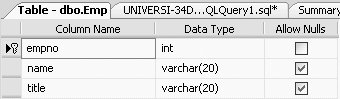From Figure 11-13, we can see that both the empno and title fields will not allow nulls, as empno is defined as a primary key and title is defined as unique. Figure 11-14 shows the empno_pk and title_uk constraints of the Emp table.
Figure 11-14. Showing the empno_pk and title_uk constraints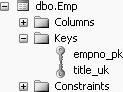In SQL Server , when you declare a PRIMARY KEY or UNIQUE constraint, internally a unique index is created just as if you had used the CREATE INDEX command. In terms of internal storage and maintenance of indexes in SQL Server , there is no difference between unique indexes created using the CREATE INDEX command and indexes created using the UNIQUE constraint. In fact, an index is a type of a constraint. When it comes to the query optimizer, how the index was created is irrelevant to the query optimizer. The query optimizer makes decisions based on the presence of a unique index.
11.3.4. The CHECK ConstraintIn addition to the NOT NULL, PRIMARY KEY and UNIQUE constraints, we can also include a CHECK constraint on our column definitions in SQL Server . A CHECK constraint will disallow a value that is outside the bounds of the CHECK. Consider the following example:
CREATE TABLE StudentA
(ssn CHAR(9),
class INT
CONSTRAINT class_ck CHECK (class BETWEEN 1 AND 4),
name VARCHAR(20))
This query will give the table definition of table StudentA as shown in Figure 11-15.
Figure 11-15. Table definition of StudentA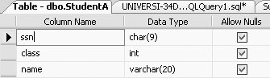To view the CHECK constraint, click the + sign beside table StudentA, and then click the + sign beside Constraints, and you will get Figure 11-16.
Figure 11-16. The CHECK constraint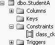Once the CHECK constraint has been added, we could not, for example, successfully execute the following INSERT:
INSERT INTO StudentA VALUES ('123456789', 5, 'Smith')
We would get the following error message: Msg 547, Level 16, State 0, Line 1 The INSERT statement conflicted with the CHECK constraint "class_ck". The conflict occurred in database "Student_course", table "dbo.StudentA", column 'class'. The statement has been terminated. This error occurs because the values of the column class have to be between 1 and 4 (and we tried to insert 5). We could however, enter a null value for class, which technically does not violate the integrity constraint (unless we specify so by making class also NOT NULL). 11.3.5. Deleting a ConstraintThe following is the general SQL syntax to delete any named constraint: ALTER TABLE Tablename DROP CONSTRAINT constraint_name For example, in table Test2a we created a constraint called ssn_salary_pk, which made both the ssn and salary columns primary keys of Test2a. If we want to delete this constraint, which means making both the ssn and salary columns just regular columns (and not primary keys), we would type the following: ALTER TABLE Test2a DROP CONSTRAINT ssn_salary_pk Now the table definition of table Test2a will appear as shown in Figure 11-17. As can be seen from Figure 11-17, the primary keys are no longer marked, as was shown in Figure 11-9.
Figure 11-17. Primary keys no longer marked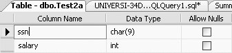Figure 11-18 also shows no constraints for table Test2a.
Figure 11-18. Constraint deleted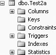11.3.6. Referential Integrity ConstraintsA relational database consists of relations (tables) and relationships between tables. To define a relationship between two tables, we create a referential integrity constraint. A referential integrity constraint is one in which a row in one table (with a foreign key) cannot exist unless a value (column) in that row refers to a primary key value (column) in another table. This is a primary key-foreign key relationship between two tables. For example, suppose we have the following two tables:
To maintain referential integrity, it would be inappropriate to enter a row (tuple) in the Employee table that did not have an existing department number already defined in the Department table. To try to insert the following row into the Employee table would be a violation of the integrity of the database, because department number 4 does not exist (that is, it has no integrity): <105,'Walsh',4> Likewise, it would be invalid to try to change a value in an existing row (that is, perform an UPDATE) to make it equal to a value that does not exist. If, for example, we tried to change: <100,'Jones',2> to: <100,'Jones',5> This operation would violate database integrity, because there is no department 5. Finally, it would be invalid to delete a row in the Department table that contains a value for a department number that is already in the Employee table. For example, if: <2,'Personnel'> were deleted from the Department table, then the row: <100,'Jones',2> would refer to a nonexistent department. It therefore would be a reference or relationship with no integrity. In each case (INSERT, UPDATE, and DELETE), we say that there needs to be a referential integrity constraint on the dept column in the Employee table referencing deptno in the Department table. When this primary key (deptno in the Department table)-foreign key (dept in the Employee table) relationship is defined, we have defined the relationship of the Employee table to the Department table. In the INSERT and UPDATE cases discussed earlier, you would expect (correctly) that the usual action of the system would be to deny the action. In SQL Server , in the case of the DELETE and UPDATE commands, there is an option available that will allow us to CASCADE the DELETE or UPDATE operations respectively. Whereas an "ordinary" referential integrity constraint would simply disallow the deletion of a row where the referenced row would be orphaned, a CASCADEd delete would delete the referencing row as well. If, for example, in the previous data we deleted department 3, in a CASCADEd delete situation, the referencing row in the Employee table, <104,Harris,3>, would be deleted as well. 11.3.6.1. Defining the referential integrity constraintTo enable a referential integrity constraint, it is necessary for the column that is being referenced to be first defined as a primary key. In the preceding Employee-Department example, we have to first create the Department table with a primary key. The CREATE TABLE statement for the Department table (the referenced table) could look like this: CREATE TABLE Department (deptno INT, deptname VARCHAR(20), CONSTRAINT deptno_pk PRIMARY KEY (deptno)) The table definition of the Department table would then be as shown in Figure 11-19.
Figure 11-19. Table definition of Department table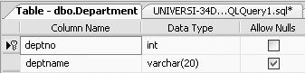The constraints for the Department table would be as shown in Figure 11-20.
Figure 11-20. Constraint of the Department table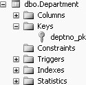The Employee table (the referencing table containing the foreign key) would then be created using this statement: CREATE TABLE Employee (empno INT CONSTRAINT empno_pk1 PRIMARY KEY, empname VARCHAR(20), dept INT CONSTRAINT dept_fk REFERENCES Department(deptno)) The table definition of the Employee table would then be as shown in Figure 11-21.
Figure 11-21. Table definition of the Employee table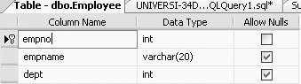Now, to view the referential integrity constraints of the Employee table, click the + sign beside Employee and then click the + sign beside Keys, you will get Figure 11-22. To modify the foreign key, right-click dept_fk and select Modify, as shown in Figure 11-23. You will get the results shown in Figure 11-24. You can expand the Table And Columns Specification option (under General), and you will be able to see what the foreign key base table is (that is, the table with the foreign key, which in this case is the Employee table), what the foreign key columns are (in this case, dept), what the primary/unique key base table is (that is, the table with the primary key, which in this case is Department), the primary/unique key column (which in this case is deptno). You can change these options by clicking on the ... icon on the right of General.
Figure 11-22. Viewing the referential integrity constraints of the Employee table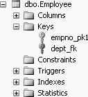
Figure 11-23. Modifying the foreign key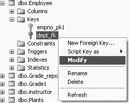The CREATE TABLE Employee... statement defines a column, dept, to be of type INT, but the statement goes further in defining dept to be a foreign key that references another table, Department. Again, within the Department table, the referenced column, deptno, has to be an already-defined primary key. Also note that the Department table has to be created first. If we tried to create the Employee table before the Department table with the referential CONSTRAINT, we would be trying to reference a nonexistent table and this would also cause an error. 11.3.6.2. Adding the foreign key after tables are createdAs we have seen with other constraints, the foreign key can be added after tables are created. To do so, we must first have set up the primary key of the referenced table. The syntax of the ALTER TABLE command to add a foreign key to a referencing table would look like this: ALTER TABLE xxx ADD CONSTRAINT dept_fk FOREIGN KEY (dept) REFERENCES Department(deptno)
Figure 11-24. The dept_fk foreign key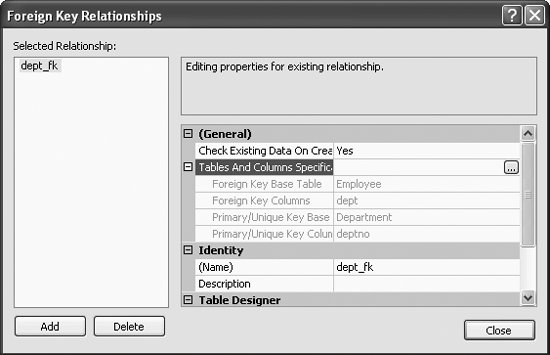The (optional) name of the CONSTRAINT is dept_fk. Note that the column's data types in the references clause must agree with the column's data types in the referenced table. 11.3.6.3. DELETE and the referential CONSTRAINTThere are a couple of options in the DELETE option of a foreign key referential constraint in SQL Server --CASCADE and NO ACTION. Both of these options specify what action takes place on a row if that row has a referential relationship and the referenced row is deleted from the parent table. First we discuss the default, which is NO ACTION, and then we look at the CASCADE option. ON DELETE NO ACTION. If the NO ACTION alternative is used in the ON DELETE option of the CREATE TABLE command, and we try to delete a row from the parent table (in this case, the Department table) that has a referencing row in the dependent table (in this case, the Employee table), then SQL Server will raise an error and the delete action on the row in the parent table will be undone. The NO ACTION option on the ON DELETE option is the default. The ON DELETE NO ACTION option is added after the REFERENCES clause of a CREATE TABLE command. The CREATE TABLE command with the ON DELETE NO ACTION would be as shown in the next example.
CREATE TABLE Employee
(empno INT CONSTRAINT empno_pk2 PRIMARY KEY,
empname VARCHAR(20),
dept INT REFERENCES Department(deptno)
ON DELETE NO ACTION)
The design of the Employee table will now be as shown in Figure 11-25.
Figure 11-25. Viewing the referential integrity constraints of the Employee table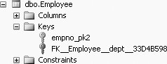Then, to view the ON DELETE NO ACTION, from Figure 11-25, right-click on EFK_Employee_dept_33D4B598 and select Modify, similar to what is shown in Figure 11-23. You will get Figure 11-26, the Foreign Key Relationships screen. On this screen, under Table Designer, expand the "INSERT And UPDATE Specification" option, and you will see the Delete Rule as No Action, shown in Figure 11-26. ON DELETE CASCADE. The ON DELETE CASCADE option may be added after the REFERENCES clause of a CREATE TABLE command, as shown here:
CREATE TABLE Employee
(empno INT CONSTRAINT empno_pk3 PRIMARY KEY,
empname VARCHAR(20),
dept INT REFERENCES Department(deptno)
ON DELETE CASCADE)
The table definition of the Employee table will be similar to what was shown in Figure 11-21.
Figure 11-26. Viewing the ON DELETE NO ACTION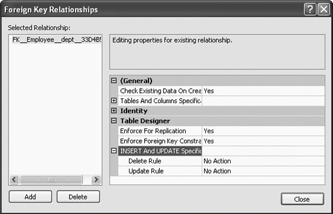The ON DELETE CASCADE option will be included in the referential integrity constraint. To view the ON DELETE CASCADE, from the Foreign Key Relationships screen, once again expand the "INSERT And UPDATE Specification" option, and you will see the Delete Rule as Cascade, shown in Figure 11-27. CASCADE will allow the deletions in the dependent table (in this case, the Employee table) that are affected by the deletions of the tuples in the referenced table (in this case, the Department table). Suppose, for example, that we had deptno = 3 in the Department table. Also suppose that we had employees in department 3. If we deleted department 3 in the Department table, then with CASCADE we would also delete all employees in the Employee table with dept = 3. 11.3.6.4. UPDATE and the referential CONSTRAINTBoth the CASCADE and NO ACTION options are also available with the ON UPDATE option of a foreign key referential constraint enforcement in SQL Server . Both these options specify what action takes place on a row if that row has a referential relationship and the referenced row is updated in the parent table. In the following discussion, we show the syntax of these two options. ON UPDATE NO ACTION. Just as with the ON DELETE option, if the NO ACTION option is used with the ON UPDATE option of the CREATE TABLE command, and we try to update a row from the parent table (in this case, the Department table) that has a referencing row in the dependent table (in this case, the Employee table), then SQL Server will raise an error and the update action on the row in the parent table will be rolled back. The NO ACTION option on the ON UPDATE option is the default.
Figure 11-27. Viewing the ON DELETE CASCADE option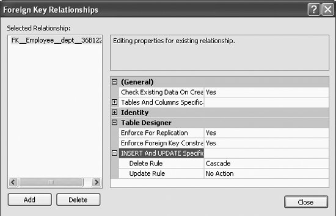Just as in the ON DELETE NO ACTION option, the ON UPDATE NO ACTION option is added after the REFERENCES clause of a CREATE TABLE command. The CREATE TABLE command with the ON UPDATE NO ACTION would be as shown here:
CREATE TABLE Employee
(empno INT CONSTRAINT empno_pk4 PRIMARY KEY,
empname VARCHAR(20),
dept INT REFERENCES Department(deptno)
ON UPDATE NO ACTION)
Once again, the design of the Employee table will be similar to what was shown in Figure 11-21. The ON UPDATE NO ACTION option will be included in the referential integrity constraint. View the ON UPDATE NO ACTION as shown in Figure 11-27. Figure 11-27 also shows the Update Rule. ON UPDATE CASCADE. The ON UPDATE CASCADE option is also added after the REFERENCES clause of a CREATE TABLE command, as shown here:
CREATE TABLE Employee
(empno INT CONSTRAINT empno_pk5 PRIMARY KEY,
empname VARCHAR(20),
dept INT REFERENCES Department(deptno)
ON UPDATE CASCADE)
The design of the Employee table will be similar to what was shown in Figure 11-21. The ON UPDATE CASCADE option will be included in the referential integrity constraint. To view the ON UPDATE CASCADE, from the Foreign Key Relationships screen, once again expand the "INSERT And UPDATE Specification" option, and you will see the Update Rule as Cascade, shown in Figure 11-28.
Figure 11-28. Viewing the ON UPDATE CASCADE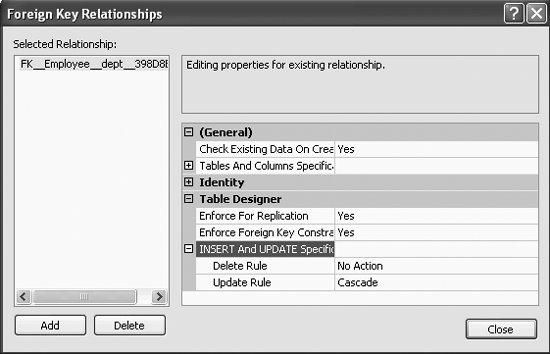When CASCADE is included in the ON UPDATE option, the row is updated in the referencing table (in this case, the Employee table) if that row is updated in the parent table (in this case, the Department table). 11.3.6.5. Using the ON DELETE and ON UPDATE togetherYou can also use the ON DELETE and ON UPDATE options together if needed. Both the ON DELETE and ON UPDATE do not necessarily have to be set to the same option. That is, both of them do not have to be set to NO ACTION or CASCADE at the same time. You can have a NO ACTION option set for one option and a CASCADE set for the other option. For example, you may create the Employee table as follows:
CREATE TABLE Employee
(empno INT CONSTRAINT empno_pk6 PRIMARY KEY,
empname VARCHAR(20),
dept INT REFERENCES Department(deptno)
ON UPDATE CASCADE
ON DELETE NO ACTION)
Once again, the table definition of the Employee table would then be as shown in Figure 11-21. Both the ON UPDATE CASCADE option and the ON DELETE NO ACTION option will be included in the referential integrity constraint. Once again, from the Foreign Key Relationships screen, expand the "INSERT And UPDATE Specification" option, and you will see the Delete Rule as well as Update Rule. The foreign key relationships figure will be as shown in Figure 11-29.
Figure 11-29. Setting the ON DELETE and ON UPDATE together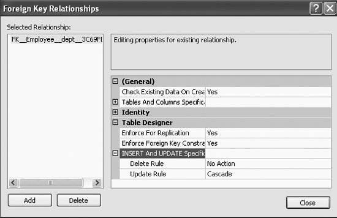So, in summary, SQL Server gives you quite a bit of flexibility in setting up your referential integrity constraints. |
|
|
|